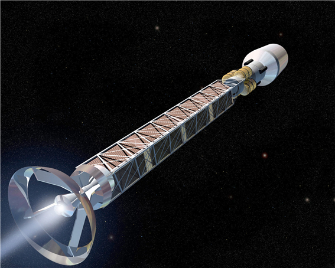

SpaceY Y360: 반물질 추진 로켓
SpaceY Y360은 반물질 추진 시스템을 사용하여 광속의 0.43%에 도달할 수 있는 혁신적인 로켓입니다.
로켓의 원리
반물질 추진은 반물질과 물질이 충돌할 때 발생하는 에너지를 이용합니다. 이 충돌은 엄청난 양의 에너지를 방출하며, 이는 로켓을 추진하는 데 사용됩니다. Y360은 이 기술을 통해 기존의 화학적 로켓 엔진보다 훨씬 높은 효율과 속력을 자랑합니다.
최대 속력
SpaceY Y360은 최대 속력으로 광속의 0.43%까지 도달할 수 있습니다.
